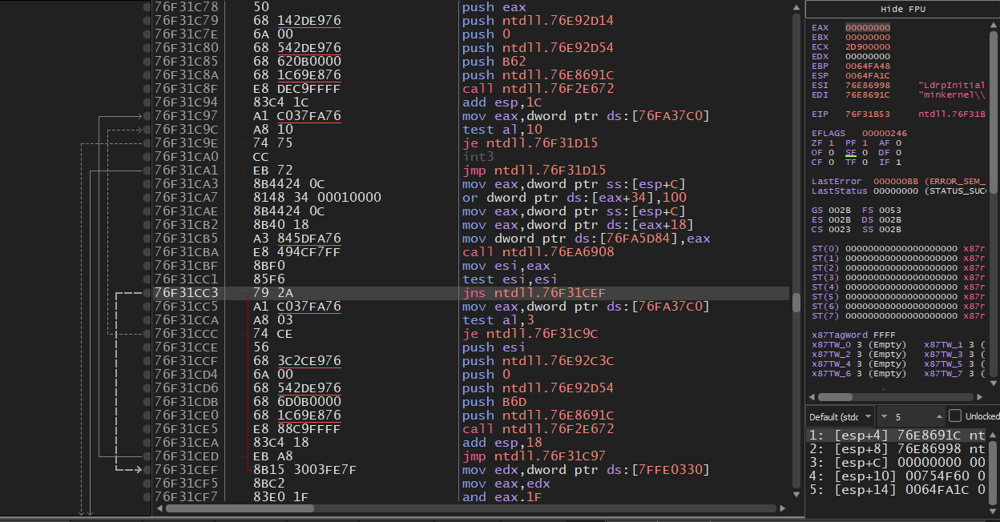

About
I'm Owen, a 21-year-old programmer.
I started learning to code when I was 14, and my passion for engineering came along with it.
I have a large collection of completed crackmes to share, as I enjoy spending an unhealthy amount of time studying languages and reverse engineering software.
This site is just my general place to write things down, share my ideas and projects, as well as practice a bit of webdev.
Feel free to look around, and don't hesitate to email me if you'd like to get in touch.
Also check out my blog, where I talk about some of my findings that I'm actually somewhat proud of. Please do keep in mind this website is entirely human made so please contact me about any errors I should fix much appreciated ^_^
